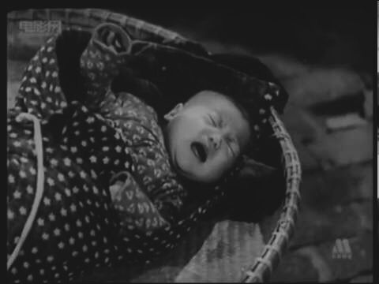
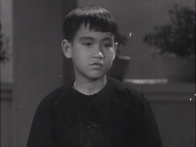
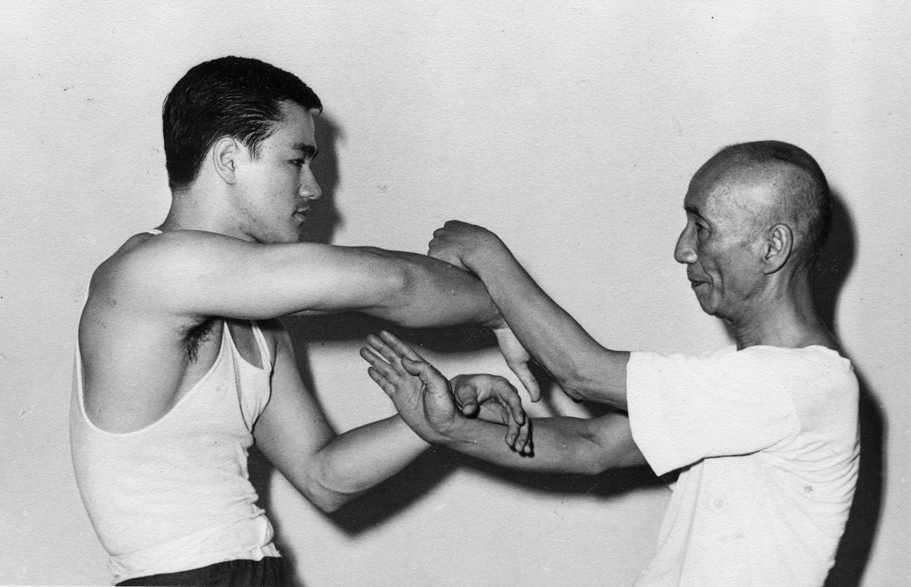
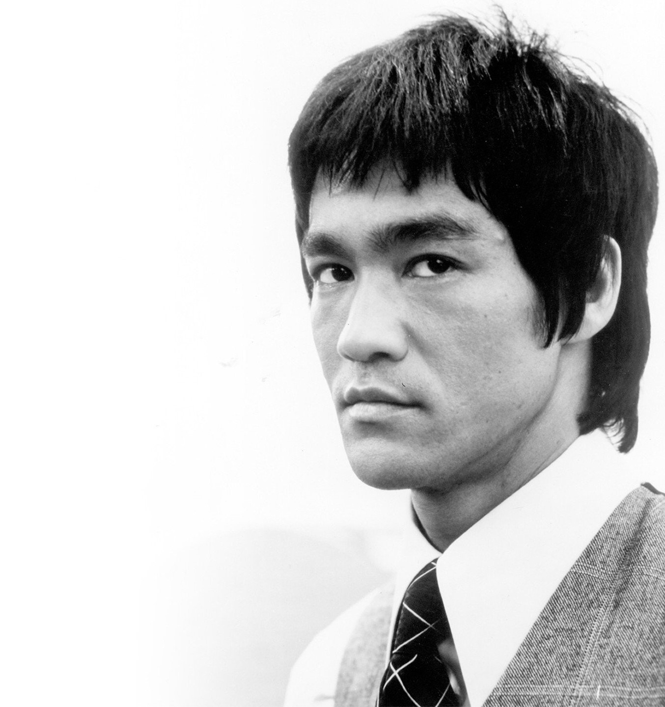

Bruce Lee was born in San Francisco. Ultimately raised in Hong Kong, Bruce Lee was a child actor appearing in more than 20 films.
One factor that caused the first films, was the fact that his dad was a famous star. Born in the mild climate of San Francisco,
the baby fell ill in Hong Kong. They boy became so weak and thin, that his parents feared he would die. Because of the illness,
Bruce grew weaker and sicker than the rest of the kids. By the age of 4, he couldn't walk without stumbling.
Later the sickness and weakness that disturbed him, were gone. He became very hyperactive.
Then, the boy ran the city and made friends with bad companies and he also used to steal apples from trays.
His parents found the only way to calm Bruce down, they gave him comics. He could read for hours in silence.
He started with kung-fu stories and progressed to novels about martial arts, knights and wizards, spending lots of time in bookstores.
He read so much that at the age of 6, he started wearing glasses.


Around the age of 7, Bruce went to the Royal Park with his father for joint tai chi classes to strengthen his body.
This became the boy's first style of martial art and a test of his patience.
He studied in the best catholic schools in Hong Kong. Bruce went to school at the age of 6.
Because of his illness, he was weaker than the rest of the children. Lee couldn’t even learn to ride a bike.
And after the incident in the pool, where the sisters held him under water to punish him, he became terrified of water and did not dare to swim. Because he was also wearing thick glasses, his image became suitable for mocking classmates. Afterwards, he started to fight everybody who insulted or humiliated him and did this till he earned respect from everybody. Then he actually started to like fighting and often he challenged classmates to fight. He eventually developed a gang of 5 or 6 boys, of which 2, remained faithful his whole life.
Bruce Lee could’t study, could’t concentrate, couldn’t do his homework.
At the age of 13, Bruce took up the study of wing chun gung fu under renowned wing chun master, Yip Man.
Bruce left Hong Kong at the age of 18, came to the United States and made his way to Seattle,
Washington where he worked in the restaurant of a family friend. He soon enrolled in the University of Washington where he pursued a degree in philosophy.

Bruce Lee
01100010 01110010 01110101 01100011 01100101 00100000 01101100 01100101 01100101 01101101 01100001 01110010 01110100 01101001 01100001 01101100 00100000 01100001 01110010 01110100 01101001 01110011 01110100